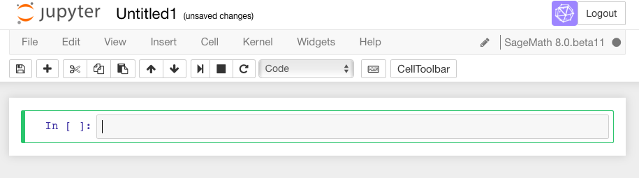
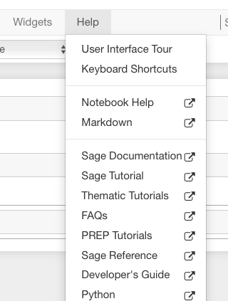
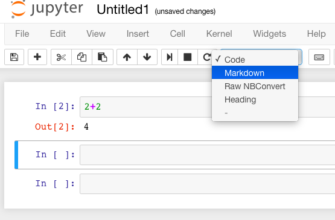
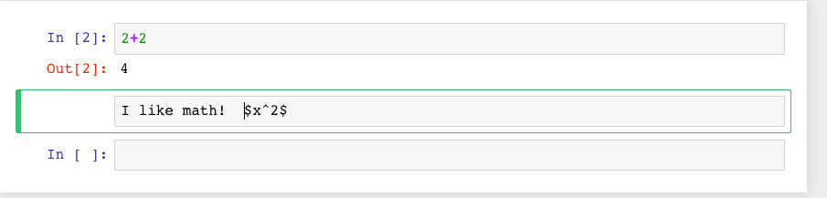
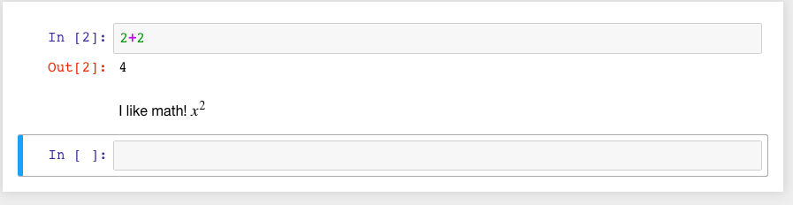
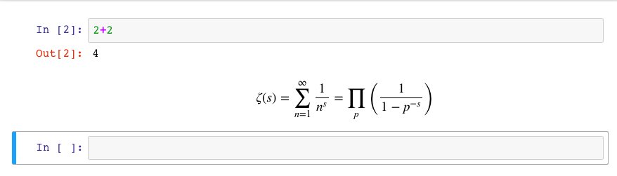

Introductory Sage Tutorial¶
This Sage document is the first in a series of tutorials developed for the MAA PREP Workshop “Sage: Using Open-Source Mathematics Software with Undergraduates” (funding provided by NSF DUE 0817071). It is licensed under the Creative Commons Attribution-ShareAlike 3.0 license (CC BY-SA).
If you are unsure how to log on to a Sage server, start using a local installation, or to create a new worksheet, you might find the prelude on logging in helpful.
Otherwise, you can continue with this tutorial, which has the following sections:
-
See Evaluating in the Jupyter notebook for the Jupyter notebook
-
See Jupyter Annotation for the Jupyter notebook
This tutorial only introduces the most basic level of functionality. Later tutorials address topics such as calculus, advanced plotting, and a wide variety of specific mathematical topics.
Evaluating Sage Commands¶
Or, How do I get Sage to do some math?
See Evaluating in the Jupyter notebook for the Jupyter notebook
Evaluating in the Jupyter notebook¶
In a Jupyter worksheet, there are little boxes called input cells or code cells. They should be about the width of your browser.
To do math in a Jupyter cell, one must do two things.
First, click inside the cell so that the cell is active (i.e., has a bright green border). This was already the case in the first cell above. (If it is blue, the Jupyter notebook is in “command mode”). Type some math in it.
Then, there are two options. A not-very-evident icon that looks like the “play” symbol on a recording device can be clicked:

Or one can use the keyboard shortcut of holding down the Shift key while you press the Enter key. We call this Shift + Enter.
Sage prints out its response just below the cell (that’s the 4
below, so Sage confirms that \(2+2=4\)). Note also that Sage has
automatically made a new cell, and made it active, after you evaluated
your first cell.
To do more mathematics, just do the same thing with more cells!

One has to learn a variety of keyboard shortcuts or click on various menu items to manipulate cells. There is a help menu to get you started on this; the Jupyter developers also maintain an example notebook which may assist you.
Functions in Sage¶
To start out, let’s explore how to define and use functions in Sage.
For a typical mathematical function, it’s pretty straightforward to define it. Below, we define a function.
sage: f(x)=x^2
>>> from sage.all import *
>>> __tmp__=var("x"); f = symbolic_expression(x**Integer(2)).function(x)
Since all we wanted was to create the function \(f(x)\), Sage just does this and doesn’t print anything out back to us.
We can check the definition by asking Sage what f(x) is:
sage: f(x)
x^2
>>> from sage.all import *
>>> f(x)
x^2
If we just ask Sage what f is (as opposed to f(x)), Sage prints
out the standard mathematical notation for a function that maps a
variable \(x\) to the value \(x^2\) (with the “maps to” arrow
\(\mapsto\) as |-->).
sage: f
x |--> x^2
>>> from sage.all import *
>>> f
x |--> x^2
We can evaluate \(f\) at various values.
sage: f(3)
9
>>> from sage.all import *
>>> f(Integer(3))
9
sage: f(3.1)
9.61000000000000
>>> from sage.all import *
>>> f(RealNumber('3.1'))
9.61000000000000
sage: f(31/10)
961/100
>>> from sage.all import *
>>> f(Integer(31)/Integer(10))
961/100
Notice that the output type changes depending on whether the input had a decimal; we’ll see that again below.
Naturally, we are not restricted to \(x\) as a variable. In the next cell, we define the function \(g(y)=2y-1\).
sage: g(y)=2*y-1
>>> from sage.all import *
>>> __tmp__=var("y"); g = symbolic_expression(Integer(2)*y-Integer(1)).function(y)
However, we need to make sure we do define a function if we use a new variable. In the next cell, we see what happens if we try to use a random input by itself.
sage: z^2
Traceback (most recent call last):
...
NameError: name 'z' is not defined
>>> from sage.all import *
>>> z**Integer(2)
Traceback (most recent call last):
...
NameError: name 'z' is not defined
This is explained in some detail in following tutorials. At this point,
it suffices to know using the function notation (like g(y)) tells
Sage you are serious about y being a variable.
One can also do this with the var('z') notation below.
sage: var('z')
z
sage: z^2
z^2
>>> from sage.all import *
>>> var('z')
z
>>> z**Integer(2)
z^2
This also demonstrates that we can put several commands in one cell, each on a separate line. The output of the last command (if any) is printed as the output of the cell.
Sage knows various common mathematical constants, like \(\pi\)
(pi) and \(e\).
sage: f(pi)
pi^2
>>> from sage.all import *
>>> f(pi)
pi^2
sage: f(e^-1)
e^(-2)
>>> from sage.all import *
>>> f(e**-Integer(1))
e^(-2)
In order to see a numeric approximation for an expression, just type the
expression inside the parentheses of N().
sage: N(f(pi))
9.86960440108936
>>> from sage.all import *
>>> N(f(pi))
9.86960440108936
Another option, often more useful in practice, is having the expression
immediately followed by .n() (note the dot).
sage: f(pi).n()
9.86960440108936
>>> from sage.all import *
>>> f(pi).n()
9.86960440108936
For now, we won’t go in great depth explaining the reasons behind this syntax, which may be new to you. For those who are interested, Sage often uses this type of syntax (known as “object-oriented”) because…
Sage uses the Python programming language, which uses this syntax, ‘under the hood’, and
Because it makes it easier to distinguish among
The mathematical object,
The thing you are doing to it, and
Any ancillary arguments.
For example, the following numerically evaluates (n) the constant
\(\pi\) (pi) to twenty digits (digits=20).
sage: pi.n(digits=20)
3.1415926535897932385
>>> from sage.all import *
>>> pi.n(digits=Integer(20))
3.1415926535897932385
Sage has lots of common mathematical functions built in, like
\(\sqrt{x}\) (sqrt(x)) and \(\ln(x)\) (ln(x) or
log(x)).
sage: log(3)
log(3)
>>> from sage.all import *
>>> log(Integer(3))
log(3)
Notice that there is no reason to numerically evaluate \(\log(3)\), so Sage keeps it symbolic. The same is true in the next cell - \(2\log(3)=\log(9)\), but there isn’t any reason to do that; after all, depending on what you want, \(\log(9)\) may be simpler or less simple than you need.
sage: log(3)+log(3)
2*log(3)
>>> from sage.all import *
>>> log(Integer(3))+log(Integer(3))
2*log(3)
sage: log(3).n()
1.09861228866811
>>> from sage.all import *
>>> log(Integer(3)).n()
1.09861228866811
Notice again that Sage tries to respect the type of input as much as possible; adding the decimal tells Sage that we have approximate input and want a more approximate answer. (Full details are a little too complicated for this introduction.)
sage: log(3.)
1.09861228866811
>>> from sage.all import *
>>> log(RealNumber('3.'))
1.09861228866811
sage: sqrt(2)
sqrt(2)
>>> from sage.all import *
>>> sqrt(Integer(2))
sqrt(2)
If we want this to look nicer, we can use the show command. We’ll
see more of this sort of thing below.
sage: show(sqrt(2))
>>> from sage.all import *
>>> show(sqrt(Integer(2)))
sage: sqrt(2).n()
1.41421356237310
>>> from sage.all import *
>>> sqrt(Integer(2)).n()
1.41421356237310
Do you remember what \(f\) does?
sage: f(sqrt(2))
2
>>> from sage.all import *
>>> f(sqrt(Integer(2)))
2
We can also plot functions easily.
sage: plot(f, (x,-3,3))
Graphics object consisting of 1 graphics primitive
>>> from sage.all import *
>>> plot(f, (x,-Integer(3),Integer(3)))
Graphics object consisting of 1 graphics primitive
In another tutorial, we will go more in depth with plotting. Here, note that the preferred syntax has the variable and endpoints for the plotting domain in parentheses, separated by commas.
If you are feeling bold, plot the sqrt function in the next cell
between 0 and 100.
Help inside Sage¶
There are various ways to get help for doing things in Sage. Here are several common ways to get help as you are working in a Sage worksheet.
Documentation¶
Sage includes extensive documentation covering thousands of functions, with many examples, tutorials, and other helps.
One way to access these is to click the “Help” link at the top right of any worksheet, then click your preferred option at the top of the help page.
They are also available any time online at the Sage website, which has many other links, like video introductions.
The Quick Reference cards are another useful tool once you get more familiar with Sage.
Our main focus in this tutorial, though, is help you can immediately access from within a worksheet, where you don’t have to do any of those things.
Tab completion¶
The most useful help available in the notebook is “tab completion”. The idea is that even if you aren’t one hundred percent sure of the name of a command, the first few letters should still be enough to help find it. Here’s an example.
Suppose you want to do a specific type of plot - maybe a slope field plot - but aren’t quite sure what will do it.
Still, it seems reasonable that the command might start with
pl.Then one can type
plin an input cell, and then press the Tab key to see all the commands that start with the letterspl.
Try tabbing after the pl in the following cell to see all the
commands that start with the letters pl. You should see that
plot_slope_field is one of them.
sage: pl
>>> from sage.all import *
>>> pl
To pick one, just click on it; to stop viewing them, press the Escape key.
You can also use this to see what you can do to an expression or mathematical object.
Assuming your expression has a name, type it;
Then type a period after it,
Then press tab.
You will see a list pop up of all the things you can do to the expression.
To try this, evaluate the following cell, just to make sure \(f\) is defined.
sage: f(x)=x^2
>>> from sage.all import *
>>> __tmp__=var("x"); f = symbolic_expression(x**Integer(2)).function(x)
Now put your cursor after the period and press your Tab key.
sage: f.
>>> from sage.all import *
>>> f.
Again, Escape should remove the list.
One of the things in that list above was integrate. Let’s try it.
sage: f.integrate(x)
x |--> 1/3*x^3
>>> from sage.all import *
>>> f.integrate(x)
x |--> 1/3*x^3
Finding documentation¶
Or, Why all the question marks?
In the previous example, you might have wondered why I needed to put
f.integrate(x) rather than just f.integrate(), by analogy with
sqrt(2).n().
To find out, there is another help tool one can use from right inside the notebook. Almost all documentation in Sage has extensive examples that can illustrate how to use the function.
As with tab completion, type the expression, period, and the name of the function.
Then type a question mark.
Press tab or evaluate to see the documentation.
To see how this help works, move your cursor after the question mark below and press Tab.
sage: f.integrate?
>>> from sage.all import *
>>> f.integrate?
The examples illustrate that the syntax requires f.integrate(x) and
not just f.integrate(). (After all, the latter could be ambiguous
if several variables had already been defined).
To stop viewing the documentation after pressing Tab, you can press the Escape key, just like with the completion of options.
If you would like the documentation to be visible longer-term, you can evaluate a command with the question mark (like below) to access the documentation, rather than just tabbing. Then it will stay there until you remove the input cell.
sage: binomial?
>>> from sage.all import *
>>> binomial?
Try this with another function!
Finding the source¶
There is one more source of help you may find useful in the long run, though perhaps not immediately.
One can use two question marks after a function name to pull up the documentation and the source code for the function.
Again, to see this help, you can either evaluate a cell like below, or just move your cursor after the question mark and press tab.
The ability to see the code (the underlying instructions to the computer) is one of Sage’s great strengths. You can see all the code to everything .
This means:
You can see what Sage is doing.
Your curious students can see what is going on.
And if you find a better way to do something, then you can see how to change it!
sage: binomial??
>>> from sage.all import *
>>> binomial??
Annotating with Sage¶
Whether one uses Sage in the classroom or in research, it is usually helpful to describe to the reader what is being done, such as in the description you are now reading.
Jupyter Annotation¶
Thanks to a styling language called Markdown and the TeX rendering engine called MathJax, you can type much more in Sage than just Sage commands. This math-aware setup makes Sage perfect for annotating computations.
Jupyter notebook can function as a word processor. To use this functionality, we create a Markdown cell (as opposed to a input cell that contains Sage commands that Sage evaluates).
To do this without the keyboard shortcut, there is a menu for each cell; select “Markdown”.
Now you can type in whatever you want, including mathematics using LaTeX.
Then evaluate the cell (for instance, with “Shift-Enter”):
Markdown supports a fair amount of basic formatting, such as bold, underline, basic lists, and so forth.
It can be fun to type in fairly complicated math, like this:
One just types things like:
$$\zeta(s)=\sum_{n=1}^{\infty}\frac{1}{n^s}=\prod_p \left(\frac{1}{1-p^{-s}}\right)$$
in a Markdown cell.
Of course, one can do much more, since Sage can execute arbitrary commands in the Python programming language, as well as output nicely formatted HTML, and so on. If you have enough programming experience to do things like this, go for it!
sage: html("Sage is <a style='text-decoration:line-through'>somewhat</a> <b>really</b> cool! <p style='color:red'>(It even does HTML.)</p>")
>>> from sage.all import *
>>> html("Sage is <a style='text-decoration:line-through'>somewhat</a> <b>really</b> cool! <p style='color:red'>(It even does HTML.)</p>")
Conclusion¶
This concludes the introductory tutorial. Our hope is that now you can try finding and using simple commands and functions in Sage. Remember, help is as close as the notebook, or at the Sage website.